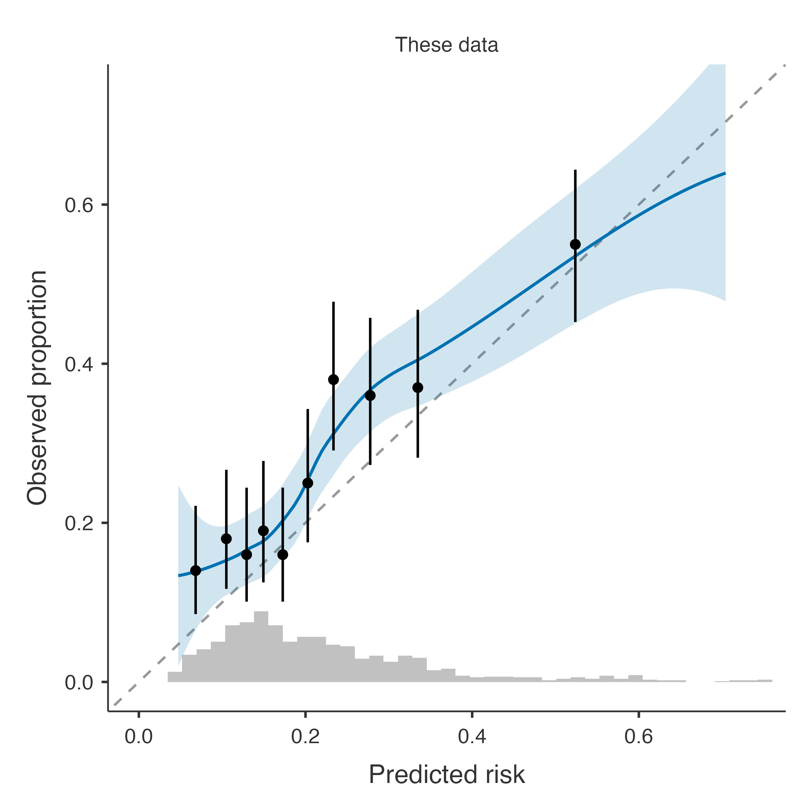

| term | estimate | SE |
|---|---|---|
| Intercept | -6.3769300 | 2.3390000 |
| age | -0.0449736 | 0.0688000 |
| age^2 | 0.0007385 | 0.0005383 |
| sex = male | 3.7014200 | 0.9184000 |
| smoking = former | 0.0429183 | 0.1686000 |
| smoking = current | 0.7213390 | 0.1709000 |
| sbp/10 | 0.1648230 | 0.0460400 |
| log(chol) | 1.2931600 | 0.3949000 |
| diabetes = yes | 0.8140290 | 0.2166000 |
| age * sex = male | -0.0534244 | 0.0146000 |
Validating a published model
Applying a model from a paper (a table of coefficients) or from a clinpred export (JSON) to your own patients: the term grammar, the variable check, performance and updating.
Question. A paper reports a logistic model for the 10-year cardiovascular risk, as a table of coefficients. Does it work in our patients (the external cohort)? Most published models are never validated outside the data that produced them; this is the analysis that should come before using one.
The model file
Validate a Published Model reads either a clinpred export (JSON, written by Export model in any development analysis: predictors, coding, spline knots, coefficients and, for Cox, the baseline survival) or a table (csv, tsv, txt or xlsx) with the columns term, estimate and, optionally, SE. Here is the table of our paper, published_logistic.csv:
Terms name variables of the data and are parsed, never run as code: age, sex = male (also sex: male or R’s sexmale), log(chol), sqrt(x), exp(x), age^2, sbp/10, and products with *. A Cox model adds rows baseline survival (at the horizon), horizon and, if the published prognostic index was centred, centre.
Step 1: the panel
Open heart_external.csv in jamovi and Prediction → Validate a Published Model:
| Panel | Setting |
|---|---|
| Model file | published_logistic.csv |
| Model type | Binary outcome (logistic) |
| Outcome / event | event10, Event level yes |
| Predictor variables | Age, SEX, smoking, sbp, chol, bmi, diabetes |
| Options | Model updating; Calibration plot, ROC curve |
jamovi gives an analysis only the variables in its boxes, so every variable the model uses must be in Predictor variables. Names are matched ignoring case (Age for age).
R syntax
r <- cpPublished(data = ext, modelFile = list(path = "published_logistic.csv"),
family = "binary", dep = "event10", eventLevel = "yes",
covs = c("Age", "SEX", "smoking", "sbp", "chol", "bmi", "diabetes"),
updating = TRUE, calPlot = TRUE, rocPlot = TRUE)Step 2: the model and the check
Model
| 95% CI | ||||||
|---|---|---|---|---|---|---|
| Term | Estimate | SE | OR | Lower | Upper | p |
| Intercept | -6.3769 | 2.3390 | -10.961 | -1.793 | .006 | |
| age | -0.0450 | 0.0688 | 0.956 | 0.835 | 1.094 | .513 |
| age^2 | 0.0007 | 0.0005 | 1.001 | 1.000 | 1.002 | .170 |
| sex = male | 3.7014 | 0.9184 | 40.505 | 6.695 | 245.047 | < .001 |
| smoking = former | 0.0429 | 0.1686 | 1.044 | 0.750 | 1.453 | .799 |
| smoking = current | 0.7213 | 0.1709 | 2.057 | 1.472 | 2.876 | < .001 |
| sbp/10 | 0.1648 | 0.0460 | 1.179 | 1.077 | 1.291 | < .001 |
| log(chol) | 1.2932 | 0.3949 | 3.644 | 1.681 | 7.902 | .001 |
| diabetes = yes | 0.8140 | 0.2166 | 2.257 | 1.476 | 3.451 | < .001 |
| age * sex = male | -0.0534 | 0.0146 | 0.948 | 0.921 | 0.975 | < .001 |
| Note. Read from published_logistic.csv (a table of coefficients). | ||||||
Variables
| Variable | Role | Status | Details |
|---|---|---|---|
| event10 | Outcome | OK | event: yes |
| Age | Predictor | OK | column 'Age' |
| SEX | Predictor | OK | column 'SEX'; as reference: Female |
| smoking | Predictor | Warning | as reference: never, unknown |
| sbp | Predictor | OK | |
| chol | Predictor | OK | |
| diabetes | Predictor | OK | as reference: no |
The model table repeats the published coefficients with their odds ratios and Wald intervals (from the published SEs). The check is the important table: it says which column each term matched and which levels act as the reference. A coefficient table does not say what the reference level is — every level that the table does not name gets all its indicators 0. For smoking that is never and unknown: the 12 patients with unknown smoking status are treated as never smokers, hence the warning. Recode them, or exclude them, before trusting the result.
Step 3: performance and updating
Performance in the Data
| 95% CI | ||||
|---|---|---|---|---|
| Measure | Estimate | Lower | Upper | |
| Discrimination | C-statistic (AUC) | 0.6732 | 0.634 | 0.710 |
| Discrimination slope | 0.0847 | |||
| Calibration | Calibration-in-the-large | 0.3274 | 0.180 | 0.475 |
| Calibration slope | 0.8412 | 0.644 | 1.039 | |
| O/E ratio | 1.2471 | 1.127 | 1.380 | |
| ICI | 0.0536 | |||
| E50 | 0.0510 | |||
| E90 | 0.0863 | |||
| Emax | 0.2140 | |||
| Overall | Brier score | 0.1857 | 0.170 | 0.201 |
| Scaled Brier score | 0.0666 | |||
| Nagelkerke R² | 0.0806 | |||
| Cox–Snell R² | 0.0557 | |||
| Note. The published model is applied unchanged. Calibration-in-the-large (or O/E) far from its ideal means that the overall risk differs from the population where the model was developed; a calibration slope below 1, that its predictions are too extreme here. | ||||
Model Updating
| vs revision | ||||||||||
|---|---|---|---|---|---|---|---|---|---|---|
| Method | Parameters | Intercept | Slope | χ² | df | p | Chosen | AUC | Brier | ICI |
| Original model | 0 | 0.000 | 1.000 | 31.0 | 10 | < .001 | 0.673 | 0.186 | 0.0536 | |
| Recalibration in the large | 1 | 0.327 | 1.000 | 12.8 | 9 | .171 | ✓ | 0.673 | 0.183 | 0.0216 |
| Recalibration | 2 | 0.132 | 0.841 | 10.4 | 8 | .237 | 0.673 | 0.183 | 0.0202 | |
| Model revision | 10 | 0.680 | 0.180 | 0.0215 | ||||||
| Note. Recalibration re-estimates the intercept and the slope of the published linear predictor; revision re-estimates every coefficient. Each test compares a method with revision; the closed testing procedure (Vergouwe et al. 2017) keeps the first method, from the original model up, not significantly worse than revision at α = 0.05 (✓). Performance of an updated model is measured in the data used to update it, so it is optimistic. | ||||||||||
In this population the published model discriminates modestly (AUC 0.673) and under-predicts (O/E 1.25). The closed testing procedure chooses recalibration in the large: a new intercept (0.33 added to the published linear predictor) is enough; the effects of the risk factors transport.

A clinpred export
The same patients with the model exported from the heart cohort analysis (heart_logistic_model.json, age as a spline, systolic pressure per 10 mmHg, an age × sex interaction):
R syntax
r2 <- cpPublished(data = ext, modelFile = list(path = "heart_logistic_model.json"),
family = "binary", dep = "event10", eventLevel = "yes",
covs = c("Age", "SEX", "smoking", "sbp", "chol", "bmi", "diabetes"))Variables
| Variable | Role | Status | Details |
|---|---|---|---|
| event10 | Outcome | OK | event: yes |
| sbp | Predictor | OK | 2.5% outside the development range [90, 183] |
| chol | Predictor | OK | 0.2% outside the development range [3.2, 10.3] |
| bmi | Predictor | OK | 0.2% outside the development range [17, 40.9]; 8.0% missing |
| age | Predictor | OK | matched to column 'Age' |
| sex | Predictor | OK | matched to column 'SEX' |
| smoking | Predictor | Warning | 12 rows with levels not in development (unknown) set to missing; 1.2% missing |
| diabetes | Predictor | OK |
A JSON model carries its own coding: the factor levels it knows, the spline knots and the development range of each variable. Its check therefore reports, like the external validation of a development analysis, the levels it does not know (unknown smoking, set to missing) and the values beyond the development range. The results equal those of the external file in the external validation example, as they should: it is the same model.